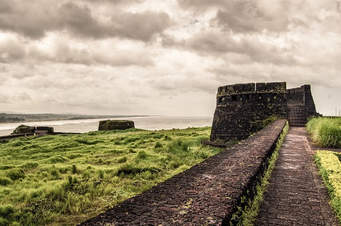
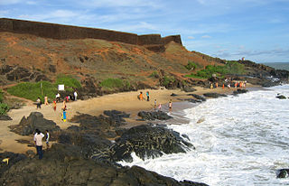

Bekal Fort
phone:+91-467-2310700 time zone: 8:00 AM - 5:30 PM
Bekal Fort
From Wikipedia, the free encyclopedia
About us|History|Tourism

Bekal Fort was built by Shivappa Nayaka of Keladi in 1650 AD, at Bekal. It is the largest fort in Kerala, spreading over 40 acres (160,000 m2).
History
During the Perumal Age Bekal was a part of Mahodayapuram. Following the decline of Mahodayapuram Perumals, Bekal came under the sovereignty of the Mushika or Kolathiri or Chirakkal Royal Family in the 12th century.[3] The maritime importance of Bekal increased under the Kolathiris and Malabar became an important port town.
After the Battle of Talikota in 1565 feudatory chieftains including the Keladi Nayakas (Ikkeri Nayaks) became powerful in the region. Bekal served as a hub to first dominate, then later defend Malabar. The economic importance of this port town prompted the Nayakas to fortify Bekal subsequently. Hiriya Venkatappa Nayaka initiated the construction of the fort and it was completed in 1650 AD by Shivappa Nayaka. Chandragiri fort near Kasargod was also built during this period.[1]
The struggles between the Kolathiries and Nayaks to hold this area ended when Hyder Ali conquered the Nayakas and Bekal fell into the hands of Mysore kings.[1]
It was an important military station for Tipu Sultan when he led a military expedition to capture Malabar. The coins and artefacts found in archaeological excavations at Bekal fort indicate the strong presence of Mysore Sultans. Tipu Sultan's death during the Fourth Anglo-Mysore War ended Mysorean control in 1799. The fort came under the British East India Company's control[1][4] and became the headquarters of the Bekal Taluk of South Canara District in Bombay presidency. The political and economic importance of Bekal and its port declined.
Nearby the Mukhyaprana Temple of Hanuman and ancient Muslim mosque bear testimony to the religious harmony that prevailed in the area
Tourism

India declared Bekal Fort a special tourism area in 1992[5] and formed Bekal Tourism Development Corporation three years later to promote it.[6] The song 'Uyire' (Tamil) from the movie Bombay was shot at Bekal Fort.